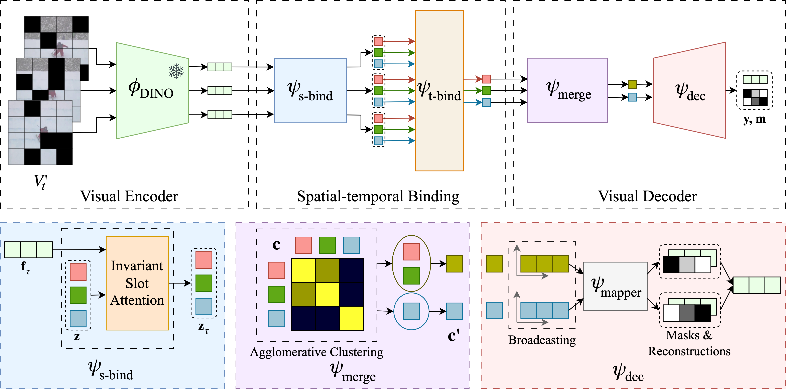

Abstract
Unsupervised multi-object segmentation has shown impressive results on images by utilizing powerful semantics learned from self-supervised pretraining. An additional modality such as depth or motion is often used to facilitate the segmentation in video sequences. However, the performance improvements observed in synthetic sequences, which rely on the robustness of an additional cue, do not translate to more challenging real-world scenarios. In this paper, we propose the first fully unsupervised method for segmenting multiple objects in real-world sequences. Our object-centric learning framework spatially binds objects to slots on each frame and then relates these slots across frames. From these temporally-aware slots, the training objective is to reconstruct the middle frame in a high-level semantic feature space. We propose a masking strategy by dropping a significant portion of tokens in the feature space for efficiency and regularization. Additionally, we address over-clustering by merging slots based on similarity. Our method can successfully segment multiple instances of complex and high-variety classes in YouTube videos.
Method Overview

In this study, we introduce SOLV, an autoencoder-based model designed for object-centric learning in videos.
Our model consists of three components:
(i) Visual Encoder for extracting features for each frame;
(ii) Spatial-temporal Binding module for generating temporally-aware object-centric representations;
(iii) Visual Decoder for estimating segmentation masks and feature reconstructions for the central frame
Quantitative Results
Quantitative Results on MOVi-E. This table shows results in comparison to the previous work in terms of FG-ARI on MOVi-E.
Quantitative Results on Real-World Data. These results show the video multi-object evaluation results on the validation split of DAVIS17 and a subset of the YTVIS19 train split.
Qualitative Results
Qualitative results on YTVIS19. We visualize our object discovery results of multi-object video segmentation on YTVIS19 after Hungarian Matching is applied.
Paper
Self-supervised Object-Centric Learning for Videos
Gorkay Aydemir, Weidi Xie and Fatma Guney
NeurIPS 2023
@InProceedings{Aydemir2023NeurIPS,
author = {Aydemir, G\"orkay and Xie, Weidi and G\"uney, Fatma},
title = {{S}elf-supervised {O}bject-Centric {L}earning for {V}ideos},
booktitle = {Advances in Neural Information Processing Systems},
year = {2023}}